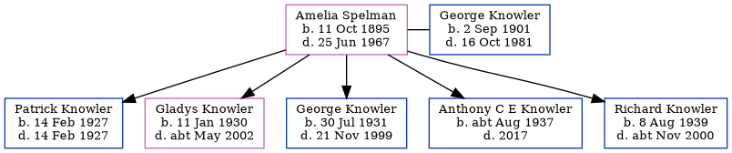

Amelia Winifred Knowler (née Spelman) 1895 - 1967
[ Home ] | [ Calendar ] | [ Surnames Index ] | [ Errors ] | [ Family History ]Amelia Spelman, the wife of George Thomas Knowler (the first cousin twice-removed on the mother's side of Nigel Horne), was born in Ramsgate, Kent, England on 11 Oct 18951,2,3,4,5,6 and married George (a farm horseman with whom she had 5 children: Patrick, Gladys Kathleen M, George Thomas Patrick, Anthony C E and Richard Henry J) in Birchington, Kent, England on 3 Oct 19258 (Our Lady and St Benedict).
During her life, she was living at her birthplace in 19011; and at 36 Chapel Road, St Lawrence, Thanet, Kent on 2 Apr 19112.
She died on 25 Jun 1967 in Dover, Kent, England4,5,7 and was buried at Hamilton Road Cemetery, 45 Hamilton Road, Deal, Kent c. 19679.
Children
- Patrick was born on 14 Feb 1927
- Gladys Kathleen M was born on 11 Jan 1930
- George Thomas Patrick was born on 30 Jul 1931
- Anthony C E was born c. Aug 1937
- Richard Henry J was born on 8 Aug 1939
Citations
- 1901 England Census Online publication - Provo, UT, USA: The Generations Network, Inc., 2005.Original data - Census Returns of England and Wales, 1901. Kew, Surrey, England: The National Archives of the UK (TNA): Public Record Office (PRO), 1901. Data imaged from the National (Relation to Head of House: Daughter)
- 1911 England Census Online publication - Provo, UT, USA: Ancestry.com Operations, Inc., 2011.Original data - Census Returns of England and Wales, 1911. Kew, Surrey, England: The National Archives of the UK (TNA), 1911. Data imaged from the National Archives, London, England. (Marital Status: Single; Relation to Head of House: Daughter)
- England & Wales births 1837-2006 - Findmypast
- England & Wales deaths 1837-2007 - Findmypast
- England & Wales, Death Index: 1984-2005 Online publication - Provo, UT, USA: The Generations Network, Inc., 2007.Original data - General Register Office. England and Wales Civil Registration Indexes. London, England: General Register Office. © Crown copyright. Published by permission of the Cont
- England & Wales, FreeBMD Birth Index, 1837-1915 Online publication - Provo, UT, USA: The Generations Network, Inc., 2006.Original data - General Register Office. England and Wales Civil Registration Indexes. London, England: General Register Office. © Crown copyright. Published by permission of the Cont
- England Billion Graves cemetery index - Findmypast
- England & Wales, Marriage Index: 1916-2005 Online publication - Provo, UT, USA: The Generations Network, Inc., 2009.Original data - General Register Office. England and Wales Civil Registration Indexes. London, England: General Register Office. © Crown copyright. Published by permission of the Cont
- https://billiongraves.com/grave/Anthony-Knowler/27756852
Media
Anthony Knowler - headstone

England & Wales births 1837-2006 Transcription - BMD-B-1895-4-AZ-000519-003
1911 England, Wales & Scotland Census Transcription - GBC-1911-RG14-04528-0261-3
England & Wales marriages 1837-2008 Transcription - BMD-M-1925-4-AZ-001082-065
1939 Register Transcription - TNA-R39-1707-1707A-021-38
England & Wales deaths 1837-2007 Transcription - BMD-D-1967-2-AZ-000534-062
England Billion Graves cemetery index - US/BMD/BILLION/5/000027756850
Family Tree
Map
Generated by ged2site. Last updated on Jul 3, 2024
Known Issues
No records of living with anyone
1939 UK register information missing